Patch 1.15.3 — Summer Fun
Released 2026-07-21 · Scout overview & sim-grounded predictions · official notes ↗
TL;DR — what actually changes how the game plays
Sustain nerfed everywhere
Potions heal less, healing minors (Krix, Idrisil, Xyris, Exarch, Lotus) all trimmed, Marrow omnivamp down, Solaris and Fist Of Razuul healing 65% -> 50%. Fights should end with less resetting.
Tanks get tenacity
Unbroken Will 25 -> 30, World Breaker 20 -> 25, Vanguardian 20 -> 25 tenacity; Flux Matrix and Absolution trade stats toward magical armor. Crowd-control comps lose some lock-down value.
Crunch's cleave doubled
Left Crunch cleave 60% -> 100% — the single biggest number in the patch for wave-clear and jungle pace.
Narbash reworked
War Anthem heals 50% less but grants Physical Power from both auras; Thunk and the ult scale much harder. Battle-Narbash is now a real direction.
Mage bases taxed, kits paid back
Gideon, Gadget, Howitzer, Iggy & Scorch all lose base stats or regen but gain ability damage — lane sustain down, spike damage up.
Ikra tuned, not gutted
Base power and regen down, Brine gold and range down — but Hydroclasm gains 40% magical-armor penetration on Brine-popped bubbles and the passive heal scales by rank now.
Assassin tax
Kallari loses movement speed, Death Mark and Shadow Walk cooldowns lengthen, Shadow Dance damage down — the Platinum+ terror gets its first real bill.
Hero changes 3 meta-shifting · 15 notable · 6 minor · bugfix-only heroes excluded
 ⟳
Narbash
⟳
Narbash
 ▲
Crunch
▲
Crunch
 ▼
Kallari
▼
Kallari
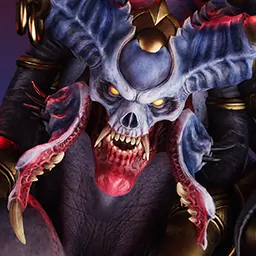
▲ Akeron ▲
Dekker
▲
Dekker
 ▲
Greystone
▲
Greystone
 ▲
Iggy & Scorch
▲
Iggy & Scorch
 ▲
Lt. Belica
▲
Lt. Belica
 ▲
Morigesh
▲
Morigesh
 ▲
Sevarog
▲
Sevarog
 ▼
Boris
▼
Boris
 ▼
Murdock
▼
Murdock
 ▼
Phase
▼
Phase
 ▼
Terra
▼
Terra
 ◆
Adele
◆
Adele
 ◆
Gideon
◆
Gideon
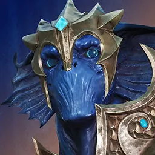
◆ Ikra ◆
Skylar
◆
Skylar
 ▲
Argus
▲
Aurora
▲
Argus
▲
Aurora
 ▲
Countess
▲
Countess
 ▲
Feng Mao
▲
Kwang
▲
Feng Mao
▲
Kwang
 ◆
Howitzer
◆
Howitzer
3 heroes
full page ↗
Narbash
support
⟳ Shift
- War Anthem reworked: auras heal 50% less, both grant physical power (March up to 50)
- Drumclubs scaling 95% -> 100%
- Song Of My People regen scales magical power; move speed band flattened
- Thunk physical scaling 100% -> 120%
- Crash Bang Boom knock-up damage 50/75/100 -> 80/150/220 + 100% bonus-physical scaling
WhyThe identity changes: War Anthem's auras heal 50% less — in the same patch that cuts potions and every healing Eternal minor — but both auras now grant physical power, Thunk's scaling rises to 120%, and Crash Bang Boom's knock-up damage jumps 50/75/100 -> 80/150/220 with a new 100% bonus-physical scaling.
What it'll changeThe heal-bot pattern behind his 53.3% raw support read over 448 games is deliberately closed, so expect a short-term dip while players relearn him. The field is already positioned for the answer: his top build is a battle-leaning Truesilver/Crystal Tear/Dynamo line at 56.6% over 394 games, and every new number in the rework points at that direction.
Sim read (pre-1.15.3): top field core Magical Bruiser (Physical-Def) — Truesilver Bracelet, Crystal Tear, Dynamo · 56.6% wr · 394 games
full page ↗
Crunch
offlane
▲ Buff
- Left Crunch cleave 60% -> 100%
WhyLeft Crunch's cleave doubles from 60% to 100% — the largest single number in the patch — transforming his wave-clear and camp-clear pace, and it compounds with the Mutilator fix (the Mutilate damage bug and cleave interaction), an item already sitting in his top field build.
What it'll changeHis tempo problem was the real matchup problem — 43% into Boris over 330 lanes and 46% into Khaimera over 735 — and clearing twice as fast attacks that directly. Expect his 51.0% overall to climb, jungle Crunch to surge, and the Augmentation/Mutilator line (51.1% on a small 46-game sample) to become the default.
Sim read (pre-1.15.3): top field core Physical DPS Carry — Augmentation, Mutilator, Tainted Blade · 51.1% wr · 46 games
full page ↗
Kallari
jungle
▼ Nerf
- Movement speed 700 -> 695
- Death Mark cooldown +1s band
- Shadow Walk cooldown +1s all ranks
- Shadow Dance 35/60/85/110/135 -> 35/55/75/95/115
WhyThe taxes land on her tempo, not her damage ceiling: Death Mark and Shadow Walk cooldowns both lengthen by a second, movement speed drops 700 -> 695, and Shadow Dance falls to 115 at top rank — fewer stealth windows per minute for the roam pattern that defines her.
What it'll changeShe sits 53.8% raw in jungle and about 61% at Platinum and above, and these cooldown taxes hit exactly the roam tempo that carries the high-tier dominance. The Malady/Vanquisher lethality line (57.0% over 696 games) stays correct but recurs slower, her 56.3%-over-561-lanes edge on Boris should compress, and she likely falls from priority-ban tier to merely strong.
Sim read (pre-1.15.3): top field core Lethality Skirmisher — Malady, Vanquisher, Spear of Desolation · 57.0% wr · 696 games
Notable 15 heroes
full page ↗
Akeron
offlane
▲ Buff
Notable
- Hellfire damage +3 all ranks
- Crushing Maw damage +5, adds 4% bonus-health scaling (power scalings trimmed)
- Consume bite damage +5, bite heal 2/2.5/3% -> 2.5/3.5/4.5% max health
- Roar Of Torment tick modifier 200% -> 275%
WhyEvery part of the kit gains flat damage and the sustain moves the right direction for this patch: Consume's bite heal rises to 2.5/3.5/4.5% max health while potions and the healing Eternal minors are being cut everywhere else, and Roar Of Torment's tick modifier jumps 200% -> 275%, a large teamfight-ult buff.
What it'll changeHis lane survival and fight payoff improve together. He sits 47.3% overall but 55.7% at Platinum and above, and buffed sustain in a sustain-starved patch should pull the lower-tier read upward — though the hardest matchup stays hard (41% into Grux over 261 lanes).
Sim read (pre-1.15.3): top field core Magical Burst — Magnify, Tainted Scepter, Truesilver Bracelet · 50.7% wr · 76 games
full page ↗
Dekker
support
▲ Buff
Notable
- Photon Disruptor cooldown -1s all ranks
- Containment Fence cooldown 25-19 -> 22-18
- Polarity Strike missing-health scaling 10% -> 15%
WhyAll three changes speed up or strengthen her defining plays: the Photon Disruptor stun returns a second sooner, Containment Fence drops to a 22-18 second cooldown, and Polarity Strike's shield scales on 15% of missing health instead of 10% — the clutch save gets bigger exactly when the ally is lowest.
What it'll changeA genuine floor-raise for a struggling support (46.4% overall, 44.4% at Platinum and above), though the patch's tenacity buffs — Unbroken Will to 30, World Breaker and Vanguardian to 25 — blunt some of the extra lock-down; expect her to climb but not leap.
Sim read (pre-1.15.3): top field core Magical DPS Carry — Crescelia, Timewarp, Dynamo · 49.2% wr · 990 games
full page ↗
Greystone
offlane
▲ Buff
Notable
- Health 700 -> 690; mana 300 -> 320
- Make Way damage up (280 -> 310 top), cooldown +1s, scaling 100% -> 90%
- Blade Of Stone health scaling 3% -> 5%
- Stone Forged Soul damage 240/370/500 -> 250/400/550; min heal 10-14% -> 14-18%; max heal 30-40% -> 35-45%; fixed 2.5x heal multiplier and Tainted interaction
WhyWhile the whole patch cuts healing, his goes up: Stone Forged Soul's revive heal rises to 14-18% minimum and 35-45% maximum with a 2.5x heal-multiplier bug fixed, and Blade Of Stone's health scaling jumps 3% -> 5%.
What it'll changeHe becomes a relative-sustain winner in a sustain-nerfed world — the built-in second life heals meaningfully more just as potions and the healing Eternal minors heal less. From 50.4% raw over 933 offlane games expect a real climb, and his 47.1%-over-1,390-lanes deficit into Grux should tighten.
Sim read (pre-1.15.3): top field core Physical Bruiser — Overlord, Rapture, Aegis of Agawar · 55.7% wr · 542 games
full page ↗
Iggy & Scorch
midlane
▲ Buff
Notable
- Health regen 1.8 -> 1.5
- Flame Turret scaling 28% -> 30%, turret health up
- Oil Spill 50-210 -> 70-210 flat, scaling 45% -> 50%, slow scales by rank to 50%
- Molotov scaling 35% -> 40%
- Inferno fire breath 240% -> 260%
WhyThe whole zone kit gains — Flame Turret scaling 28% -> 30% with tougher turrets, Oil Spill's floor up to 70 flat at 50% scaling, Molotov 35% -> 40%, and Inferno's fire breath 240% -> 260% — for the price of health regen 1.8 -> 1.5.
What it'll changeThe regen cut stings less on a hero who wins by controlling space instead of trading blows. Offlane Iggy (52.9% raw over 306 games) gains the most because burn zones decide those lanes, and the mid seat should tick up from its 49.7% raw read.
Sim read (pre-1.15.3): top field core Magical Burst — Orb of Growth, Entropy, Megacosm · 53.3% wr · 406 games
full page ↗
Lt. Belica
midlane
▲ Buff
Notable
- Health regen 1.8 -> 1.55; physical power growth 1.49 -> 1.65; armor 27 -> 29
- Seismic Assault top rank 260 -> 280
- Void Bomb scaling 65% -> 70%, cooldown down
- Neural Disruptor 190/290/390 -> 200/325/450
WhyThe punish rotation gets heavier at every step — Seismic Assault to 280 at top rank, Void Bomb at 70% scaling on a shorter cooldown, and Neural Disruptor jumping to 200/325/450 — while health regen 1.8 -> 1.55 trims her lane sustain in exchange.
What it'll changeHer burst combo hits noticeably harder, which suits a hero who already spikes with skill (49.1% overall, 60.9% at Platinum and above on a 69-game sample); expect the 49.5% raw mid read to move up, with a slightly more punishable early lane as the cost.
Sim read (pre-1.15.3): top field core Magical Burst — Combustion, Noxia, Wraith Leggings · 52.0% wr · 456 games
full page ↗
Morigesh
midlane
▲ Buff
Notable
- Mark damage 60/75/90/105/120 -> 60/80/100/120/140
WhyMark — the recurring damage her whole kit revolves around — rises to 60/80/100/120/140, a flat +20 at max rank that compounds on every re-cast against a marked target.
What it'll changeA recovery step for a hero in real trouble: 45.1% overall with a top field build sitting at 45.2% over 250 games. The buff makes her all-in respectable again, but one number will not fix the pattern alone — expect movement toward even, not past it.
Sim read (pre-1.15.3): top field core Magical Frontline — Combustion, Lifebinder, Megacosm · 45.2% wr · 250 games
full page ↗
Sevarog
offlane
▲ Buff
Notable
- Reaper Of Souls omnivamp 6% -> 5%
- Subjugate 50-90 -> 60-120
- Colossal Blow 180/300/420 -> 200/330/460
- Gravebreaker: Colossal Blow now damages towers (25% max-health true damage)
WhySubjugate and Colossal Blow both gain real damage (60-120 and 200/330/460), and the Gravebreaker upgrade turns the ult into a siege weapon — Colossal Blow now deals 25% max-health true damage to towers — at the small price of Reaper Of Souls omnivamp 6% -> 5%.
What it'll changeHe gains an objective identity no other offlaner has: land the ult on a dive or a push and the tower pays for it. From 48.1% overall (with a strong 61.5% Platinum-and-above read on just 39 games) expect his pick rate and split-push value to rise more than his raw winrate.
Sim read (pre-1.15.3): top field core Physical-Def Frontline — Fire Blossom, Tainted Guard, Fist of Jazuul · 54.8% wr · 80 games
full page ↗
Boris
jungle
▼ Nerf
Notable
- Health growth 133 -> 130; both armors down ~3
- Tesseract attack speed per canister -1% all tiers; non-hero healing 25% -> 20%
- Primeval Roar damage reduction top rank 36% -> 30%
- Chrono Swipe -5 damage, +1s cooldown
WhyThe nerfs target exactly what makes him a frontline jungler: health growth 133 -> 130 with both armors down about 3, Primeval Roar's damage reduction cut from 36% to 30% at top rank, and Tesseract's non-hero healing 25% -> 20% — all landing on top of the patch-wide sustain trim.
What it'll changeHe holds one of the highest jungle presences in the field (52.4% raw over 776 games) and a 60.6% record at Platinum and above; softer mid-fight durability should compress that high-tier dominance and narrow his 53.5%-over-1,911-lanes edge on Khaimera.
Sim read (pre-1.15.3): top field core Physical Bruiser — Sky Splitter, Basilisk, Rapture · 54.5% wr · 488 games
full page ↗
Murdock
carry
▼ Nerf
Notable
- Physical power 59 -> 58; regen, both armors down
- Shots Fired top ranks down (65% -> 60%)
- Buckshot 70-182 -> 60-170
- Martial Law ultimate damage 12% -> 15%
WhyThe core damage pattern is trimmed again — Shots Fired to 60% at top rank, Buckshot down to 60-170, power 59 -> 58, with regen and both armors shaved — and the Martial Law ultimate-damage bump to 15% is the lone payback.
What it'll changeHe already loses both premier carry head-to-heads (45.9% into Sparrow over 3,081 lanes, 48% into Legion over 2,040) and reads 46.2% overall; this pushes him further from the carry seat, leaving the sleeper offlane flex (53.9% raw over 191 games) as the most interesting part of his stock.
Sim read (pre-1.15.3): top field core Crit Burst — Lightning Hawk, Vanquisher, Imperator · 56.5% wr · 1,183 games
full page ↗
Phase
support
▼ Nerf
Notable
- Health growth 134 -> 131; physical armor 28 -> 26 (growth 5.2 -> 5)
WhyA pure durability shave — health growth 134 -> 131, physical armor 28 -> 26 with growth 5.2 -> 5 — on a support whose job is standing in range to keep the tether attached.
What it'll changeGetting caught costs her more, and she is the one support that must stay forward to function; from the second support seat (51.6% raw over 1,164 games, 57.3% at Platinum and above) expect a modest slide, with the Steel matchup (48.8% over 1,647 lanes) staying against her.
Sim read (pre-1.15.3): top field core Magical Bruiser (Mixed-Def) — Marshal, Enmas Blessing, Galaxy Greaves · 54.2% wr · 936 games
full page ↗
Terra
offlane
▼ Nerf
Notable
- Health regen 2.1 -> 1.8 (growth down); physical armor growth 5.2 -> 4.8; mana 330 -> 350
- Ruthless Assault armor steal 37.5% -> 35%, mana flat 50
- Hersir's Will stack interval 0.6s -> 0.5s
WhyThe durability keeps coming off — health regen 2.1 -> 1.8 with growth down, physical armor growth 5.2 -> 4.8, and Ruthless Assault's armor steal trimmed to 35% — with only the faster Hersir's Will stack interval (0.6s -> 0.5s) going the other way.
What it'll changeShe is already underwater at 47.3% overall and 48% into Grux over 694 lanes; shaving her armor growth and regen again pushes the dive-frontline pattern further toward niche, and the tank-leaning Fire Blossom line (54.6% over 164 games) becomes less about diving and more about surviving.
Sim read (pre-1.15.3): top field core Physical-Def Burst — Fire Blossom, Tainted Guard, Inquisition · 54.6% wr · 164 games
full page ↗
Adele
support
◆ Mixed
Notable
- Physical armor 36 -> 34; health regen 2.1 -> 1.8
- Acacia cleave 10% -> 20%
- Royal Flourish mana 30-50 -> 40-60, cooldown 13 -> 14
- Iron Rose mana 70 -> 60
- Imperial Lash mana 40-60 -> 50-70, cooldown floor 7.5 -> 8.5
- Court Of Roses ally damage reduction 15% -> 20%
WhyHer costs go up and her staying power comes down — Royal Flourish mana 30-50 -> 40-60, Imperial Lash mana 50-70 with a cooldown floor of 8.5, health regen 2.1 -> 1.8 — in the same patch that trims potion healing, so her poke recurs slower and her lane recovery thins. The paybacks are wave control (Acacia cleave 10% -> 20%) and a stronger teamfight ult (Court Of Roses ally damage reduction 15% -> 20%).
What it'll changeExpect less early kill pressure and more value banked in the ult: she leans further into the durable frontline the field already runs — the Dawnstar/Xenia/Raiment line at 57.6% over 382 games — while her overall support read (49.1% raw over 519 games) stays roughly flat.
Sim read (pre-1.15.3): top field core Physical-Def Frontline — Dawnstar, Xenia, Raiment of Renewal · 57.6% wr · 382 games
full page ↗
Gideon
midlane
◆ Mixed
Notable
- Physical power 54 -> 53; health regen 1.7 -> 1.45; mana 320 -> 340
- Cosmic Rift top rank 270 -> 290
- Void Breach 95-235 -> 100-260
- Black Hole 490/710/930 -> 520/780/1040, scaling 240% -> 250%
WhyThe trade is plain: lane sustain down — health regen 1.7 -> 1.45, stacking with weaker potions — and teamfight payoff up, with Black Hole rising 490/710/930 -> 520/780/1040 at 250% scaling and Cosmic Rift and Void Breach both gaining top-end damage.
What it'll changeHis laning gets a little more punishable while the ult becomes a harder teamfight bomb; the AzureCore burst line at 57.6% over 1,260 games benefits most, and his 54.8%-over-1,590-lanes edge on Ikra keeps him one of the mid seats that answers her.
Sim read (pre-1.15.3): top field core Magical Burst — Azure Core, Combustion, Wraith Leggings · 57.6% wr · 1,260 games
full page ↗
Ikra
carry
◆ Mixed
Notable
- Physical power 60 -> 58; health regen 1.65 -> 1.45
- Herald bubble healing 3 -> 4-12 by rank; anomaly window 5s -> 4s, burn 0.6% -> 0.75%
- Narcosis +5 damage
- Hydroclasm slow 12% -> 15%, charged bubble +10, scaling 65% -> 70%; NEW: Brine-popped bubbles penetrate 40% magical armor
- Brine scaling 55% -> 50%, kill gold down, range 1900 -> 1750, cooldown floor 3 -> 4
- Genesis slow 60% -> 50%
WhyThe safe parts get taxed — Brine's range drops 1900 -> 1750 with less kill gold and a longer cooldown floor, base power and regen come down — while the skilled part gets paid: Brine-popped bubbles now penetrate 40% magical armor and Hydroclasm's slow rises to 15%.
What it'll changeThis widens her skill gap instead of closing her power gap. She runs 52.3% overall but roughly 65% at Platinum and above, and the new armor penetration rewards exactly the full bubble-pop combo that high-tier players land — expect the low-tier read to sag, the expert read to survive, and stacking magical armor to be a weaker counter than it looks.
Sim read (pre-1.15.3): top field core Magical Skirmisher — Combustion, Wraith Leggings, Noxia · 46.1% wr · 1,079 games
full page ↗
Skylar
carry
◆ Mixed
Notable
- Health 690 -> 680; regen 1.5 -> 1.35
- Hypercharge power/attack-speed/on-hit all up ~1-2%
- Atomiser missing-health 15/20/25% -> 20/25/30%
- Plasma Barrage adds 6% missing-health physical damage
WhyHer execute gets sharper as her sustain gets thinner: Atomiser's missing-health damage rises to 20/25/30% and Plasma Barrage adds 6% missing-health physical damage, while health 690 -> 680, regen 1.5 -> 1.35, and the patch's weaker potions all trim her recovery.
What it'll changeShe becomes a better finisher in exactly the meta this patch builds — more tenacity and sturdier frontlines mean more low-health targets living long enough to execute. From 52.0% raw over 696 carry games expect her to hold or gain, with a slightly more fragile lane as the trade.
Sim read (pre-1.15.3): top field core Crit Burst — Plasma Blade, Vanquisher, Imperator · 48.6% wr · 879 games
Minor 6 heroes
full page ↗
Argus
midlane
▲ Buff
Minor
- Dread Nova +5 damage
- Ether Crystal +5 damage
- Synaptic Obliterator 100/130/160 -> 130/155/180, projectile speed 12500 -> 13500
- Infinite Obliteration speed bugfix (+25% -> +50%)
WhyPolish-level gains across the kit — Dread Nova and Ether Crystal +5, Synaptic Obliterator up to 130/155/180 with a faster projectile, and the Infinite Obliteration bugfix restoring the intended +50% projectile speed.
What it'll changeHe is already one of the strongest mid seats (53.9% raw over 839 games) and these buffs keep him there rather than move him; the AzureCore/Entropy line at 57.6% over 784 games stays the play, with his snipe landing a little more often.
Sim read (pre-1.15.3): top field core Magical Frontline — Azure Core, Entropy, Wraith Leggings · 57.6% wr · 784 games
full page ↗
Aurora
offlane
▲ Buff
Minor
- Fixed Overseer not amplifying Cryoseism damage
WhyThe lone change is a bugfix, but a meaningful one: Overseer now correctly amplifies Cryoseism, so any build carrying that item gets full ultimate damage for the first time.
What it'll changeOverseer builds gain free damage on her biggest teamfight ability. She already wins across three lanes — 51.2% raw offlane, 52.1% jungle, and 58.3% in a small 168-game support sample — so this nudges a healthy hero slightly up without changing how she is played.
Sim read (pre-1.15.3): top field core Magical Bruiser (Mixed-Def) — Magnify, Elafrost, Flux Matrix · 52.1% wr · 249 games
full page ↗
Countess
midlane
▲ Buff
Minor
- Physical power growth 3.4 -> 4.5
- Blade Siphon +5 damage all ranks
WhyPhysical power growth 3.4 -> 4.5 makes her basic attacks scale meaningfully harder into the late game, and Blade Siphon +5 damage smooths her clear between dives.
What it'll changeA scaling floor-raise for a hero who already over-performs up the ladder — 47.3% overall but 58.0% at Platinum and above, plus a sleeper offlane read at 52.4% raw over 271 games; expect a modest lift that shows most in longer games.
Sim read (pre-1.15.3): top field core Magical Skirmisher — Combustion, Noxia, Wraith Leggings · 51.7% wr · 381 games
full page ↗
Feng Mao
jungle
▲ Buff
Minor
- Physical power 60 -> 62; mana 320 -> 340 (health growth 138 -> 135)
- Hamstring damage up (top rank 98 -> 105)
- Reaping Dash 50-110 -> 55-135
WhyMore power (60 -> 62), more mana (320 -> 340), and real damage on the mobility tool — Reaping Dash rises to 55-135 — for the price of a little health growth (138 -> 135).
What it'll changeA modest damage lift that makes the all-in more rewarding without changing his pattern; from a 48.0% overall read this moves him toward even rather than into the meta conversation, and the Malady lethality line (51.2% over 241 games) stays the build.
Sim read (pre-1.15.3): top field core Lethality DPS Carry — Malady, Painweaver, Omen · 51.2% wr · 241 games
full page ↗
Kwang
jungle
▲ Buff
Minor
- Physical power growth 4 -> 4.8
- Surge Of The Heavens +5 damage
- Slayer Of The Heavens minion-aggro bugfix
WhyPhysical power growth 4 -> 4.8 is a real late-game scaling bump, Surge Of The Heavens gains flat damage, and the minion-aggro bugfix cleans up his ult engages.
What it'll changeAnother step for a hero who already climbs with rank — 49.2% overall against 56.2% at Platinum and above; the growth buff pays out most in long games, a modest but clean lift that does not change the build.
Sim read (pre-1.15.3): top field core Magical Burst — Spirit of Amir, Oathkeeper, Tainted Scepter · 50.0% wr · 100 games
full page ↗
Howitzer
midlane
◆ Mixed
Minor
- Physical power 61 -> 57; health regen 1.65 -> 1.5
- R2000 scaling -5% all ranks
- Land Mine top rank 210 -> 230
- Slow Grenade mine damage +20%
- Make It Rain total 512/736/960 -> 544/768/992
- Combat Thrusters move speed down; Blast Off CDR 12% -> 15%
WhyA tax-and-payback pass: base power 61 -> 57 and health regen 1.65 -> 1.5 hit his basic-attack poke and lane sustain, while the ability side is paid back — Land Mine to 230 at top rank, Slow Grenade's mine damage +20%, and Blast Off's cooldown refund 12% -> 15%.
What it'll changeRoughly a wash that tilts him from poke toward ability zoning; his mid read (49.9% raw over 435 games, 44.3% at Platinum and above) should not move much, and the Combustion skirmisher line at 55.2% over 384 games stays the build.
Sim read (pre-1.15.3): top field core Magical Skirmisher — Combustion, Wraith Leggings, Noxia · 55.2% wr · 384 games
Eternals (draft blessings)
A sweep against sustain and free value: every healing minor trimmed (Krix, Idrisil, Xyris, Exarch), Lotus and Demiurge utility taxed, Marrow omnivamp down. Vermis and Thraex are the only clean winners.
tap an Eternal to jump to its change
 Vermis
▲ Buff
Vermis
▲ Buff
- Damage per level 0.2% -> 0.25%
MeaningA small late-game bump for scaling damage dealers — the extra 0.05% per level only matters past the mid game.
 Marrow
◆ Mixed
Marrow
◆ Mixed
- Omnivamp 0.75% -> 0.6%, but per-level 0.05% -> 0.06%
MeaningFlat omnivamp starts lower but grows faster: weaker in early skirmishes, roughly break-even by max level, so it now rewards longer games.
 Thraex
▲ Buff
Thraex
▲ Buff
- Rallying Roar movement speed 20% -> 25%
MeaningRallying Roar gets noticeably faster engage and disengage — stronger on supports and divers who pop it to start or leave fights.
 Krix
▼ Nerf
Krix
▼ Nerf
- Regenerative Tissue top ranks 0.8%/1.2% -> 0.7%/1%; Voracity max-health healing 1% -> 0.75% (kill gold 2 -> 3)
MeaningPart of the patch-wide sustain tax: both healing lines come down, with a small kill-gold sweetener that pushes it toward aggressive junglers rather than attrition laners.
 Idrisil
▼ Nerf
Idrisil
▼ Nerf
- Mending top rank 7% -> 6% health regen
MeaningA straight trim to its top-rank regen — lane attrition with Mending is a little weaker, in line with the potion nerfs.
 Xyris
▼ Nerf
Xyris
▼ Nerf
- Iron Will critical-strike healing 7% -> 6%
MeaningCrit builds heal slightly less per strike; barely felt mid-game, a real trim on full-crit carries late.
 Exarch
▼ Nerf
Exarch
▼ Nerf
- Preservation bonus healing 12% -> 10%
MeaningDedicated healers lose a slice of their amplified output — stacks with the Solaris/Fist of Razuul healing cuts, so pure-sustain supports feel it twice.
 Lotus
▼ Nerf
Lotus
▼ Nerf
- Immaculate damage reduction 20% -> 15%; Prima Donna damage taken 5% -> 6%
MeaningThe defensive window is meaningfully weaker: a quarter of the damage reduction is gone and Prima Donna taxes a bit more, so it no longer turns dives off by itself.
 Demiurge
▼ Nerf
Demiurge
▼ Nerf
- Construct ability haste 1.25 -> 1; Bloatware damage reduction 1% -> 0.75%
MeaningBoth perks shaved — ability-haste ramp and the damage-reduction stack. Still the utility pick, just less free value on cooldown casters.
 Aion
▼ Nerf
Aion
▼ Nerf
- Runic Focus bonus magical power 0.2% -> 0.15%
MeaningA light touch on scaling magical power; late-game mages lose a sliver of their ceiling, nothing that changes the pick.
Items
tap an item to jump to its change
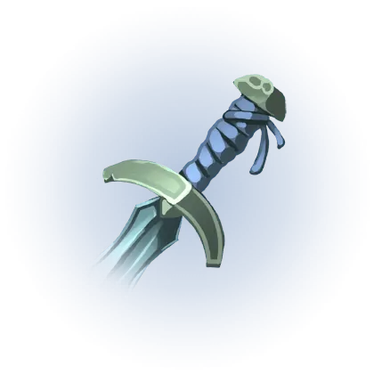
⟳ Absolution ⟳ Crescelia ⟳ Dreambinder ⟳ Earthshaker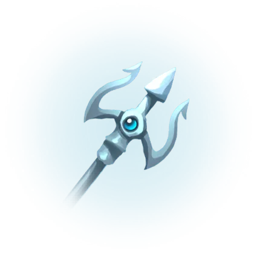
⟳ Scattershot ▲ Dawnstar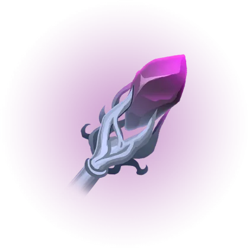
▲ Entropy ▲ Exodus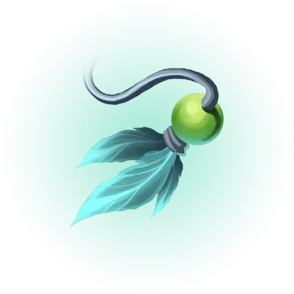
▲ Frosted Lure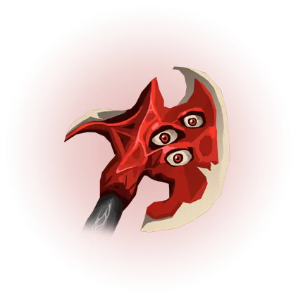
▲ Mutilator ▲ Syonic Echo ▲ Tainted Charm ▲ Tyranny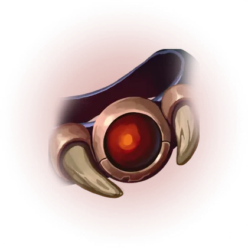
▲ Unbroken Will ▲ Vanguardian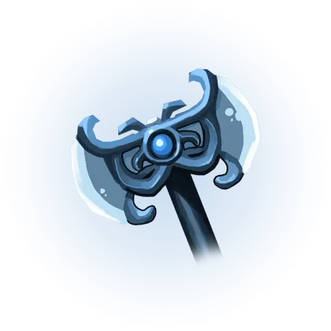
▲ Viper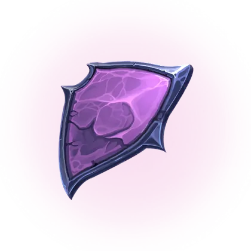
▲ Void Conduit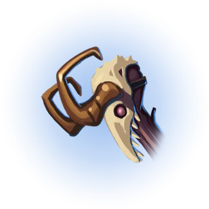
▲ World Breaker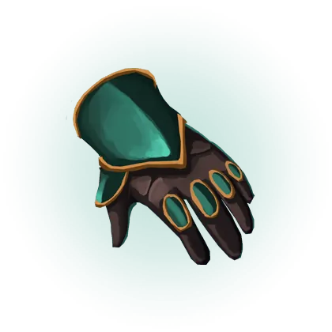
◆ Dynamo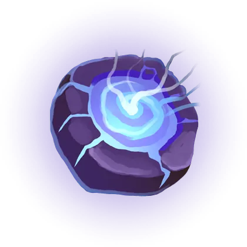
◆ Flux Matrix ▼ Cursed Scroll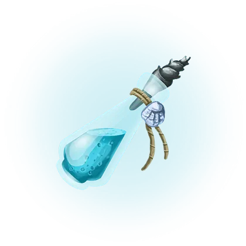
▼ Divine Potion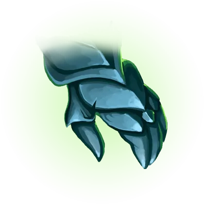
▼ Fist Of Razuul ▼ Orb Of Enlightenment ▼ Orb Of Growth ▼ Pygmy Dust ▼
Rebirth
▼
Rebirth
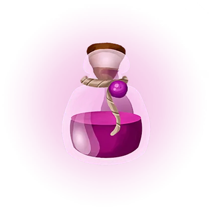
▼ Refillable Potion ▼
Sky Splitter
▼
Sky Splitter
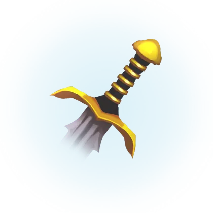
▼ Solaris
Absolution
⟳ Shift
Cost 3150 -> 3100; attack speed 25% -> 35%; physical power 40 -> 30; magical armor 35 -> 40
Crescelia
⟳ Shift
Cost 2450 -> 2300; haste 20 -> 15; Moonblade loses 12% CDR, gains +12 gold on hero hit
Dreambinder
⟳ Shift
Magical power 80 -> 70; Chilling Spells slow 25% -> 30%; DoT slow 15% -> 20%
Earthshaker
⟳ Shift
Physical power 40 -> 45, health 250 -> 300, haste 10 -> 15, Battleborn 1% -> 1.25%; 20% attack speed removed
Scattershot
⟳ Shift
Physical power 30% -> 40%, +50% bonus minion damage, but no longer benefits from lifesteal
Dawnstar
▲ Buff
Crusader applies a damage-reduction stack when an enemy is immobilized
Entropy
▲ Buff
Degradation 3% -> 3.5%
Exodus
▲ Buff
Cooldown 100 -> 90
Frosted Lure
▲ Buff
Health 300 -> 325; armor 35 -> 40; Frostwaver damage 50 -> 80, range 550 -> 650
Mutilator
▲ Buff
Fixed Mutilate damage bug and cleave interaction
Syonic Echo
▲ Buff
Physical power 55 -> 60
Tainted Charm
▲ Buff
Health 350 -> 375
Tyranny
▲ Buff
Tyrant's Edge ultimate haste 15 -> 20
Unbroken Will
▲ Buff
Tenacity 25 -> 30
Vanguardian
▲ Buff
Tenacity 20 -> 25
Viper
▲ Buff
Physical power 30 -> 35; Diligence +8% -> +10%
Void Conduit
▲ Buff
Missing-mana regen 1% -> 1.25%
World Breaker
▲ Buff
Tenacity 20 -> 25
Dynamo
◆ Mixed
Physical armor 25 -> 30; Immobilizer damage amp 10% -> 8%
Flux Matrix
◆ Mixed
Haste 12 -> 10; magical armor 40 -> 45
Cursed Scroll
▼ Nerf
Max-health scaling 4% -> 3.5%
Divine Potion
▼ Nerf
Healing 11/14/17/20 -> 11/12.5/14/17 (total 165-300 -> 165-255)
Fist Of Razuul
▼ Nerf
Healing 65% -> 50%
Orb Of Enlightenment
▼ Nerf
Health per level 15 -> 12; Art Of Fortitude 3% over 3s -> 3% over 5s
Orb Of Growth
▼ Nerf
Art Of Fortitude healing 3% over 3s -> 3% over 5s
Pygmy Dust
▼ Nerf
Enemy shrink 23% -> 18%
Rebirth
▼ Nerf
Cost 2800 -> 2950
Refillable Potion
▼ Nerf
Healing 9/12/15/18 -> 9/10.5/12/15 (total 135-270 -> 135-225)
Sky Splitter
▼ Nerf
Lifesteal 8% -> 7%; Rend melee 5.5% -> 5%
Solaris
▼ Nerf
Physical power 55 -> 50; Solarblade healing 65% -> 50%
Heal & shield power 12% -> 10%
Ranked
No ranked-system changes this patch beyond fixes: placement matches now count toward seasonal rewards, pre-selected heroes are immediately selectable after bans, and Draft-dodge bans display their reason and duration.
- Ranked placement matches now count toward seasonal rewards
- Pre-selected heroes in Ranked Draft are immediately selectable after bans
- Draft Dodge bans now display reason and duration
Generated from
data/patches/1.15.3.json +
data/aggregates/patch-1.15.3-predictions.json by
scripts/build-patch-page.js. Predictions authored on session compute (no API) and
grounded in the stated change numbers. Measured results (when shown) come from the ranked
match feed: pre-patch baseline vs the patch-to-date window (dates in the predictions file's measured.source).